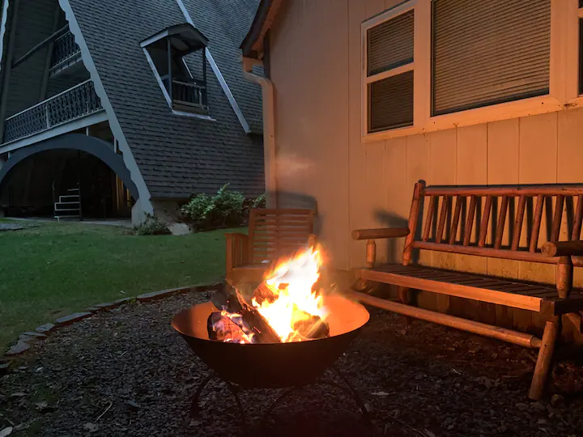

O Chalé Ruisseau é um verdadeiro sonho de hospedagem, localizado nos Boone, Carolina do Norte nos Estados Unidos. Um espaço inteiro privado, a casa dos seus sonhos possui 3 quartos, 2 banheiros e acomoda até 5 hóspedes. Além disso, oferece climatização com aquecimento central, segurança doméstica completa , internet e escritório, área de serviço e cozinha totalmente equipadas e estacionamento incluído.


Em média um noite no Chalé Ruisseau é R$990 reais, sendo a política de cancelamento gratuida atê 1 dia antes do Check-in e com reembolso integral, o reembolso parcial só ocorre se o cancelamento for feito no dia do Check-in.
Situado na encosta da cordilheira que corre acima de Boone, NC fica o Chalé Ruisseau. Rodeado por madeiras e com o Doe Fork correndo por seu quintal, você se sente escondido no coração de Blue Ridge, mesmo estando a poucos minutos da cidade.
O espaço é dois andares superiores privados de casa. O proprietário fica em um apartamento separado no térreo. Não há espaço compartilhado.
Você terá acesso privado a todos os conveses, a todo o quintal e a uma pequena sauna a vapor privativa coberta.


Ser um chalé aconchegante não é o bastante para você? Bem a residencia ainda tem um quintal aberto, varanda privativa, moveis externos, fogueira e nas localidades um lago e rio.

A tração integral ou 4X4 é necessária quando neva. Alta folga também é necessária em acumulações acima de 6 polegadas, pois o último trecho da estrada não é arado. A última 1/4 milhas é cascalho áspero.Estacionamento limitado, dois carros está bom. Três não funciona bem.